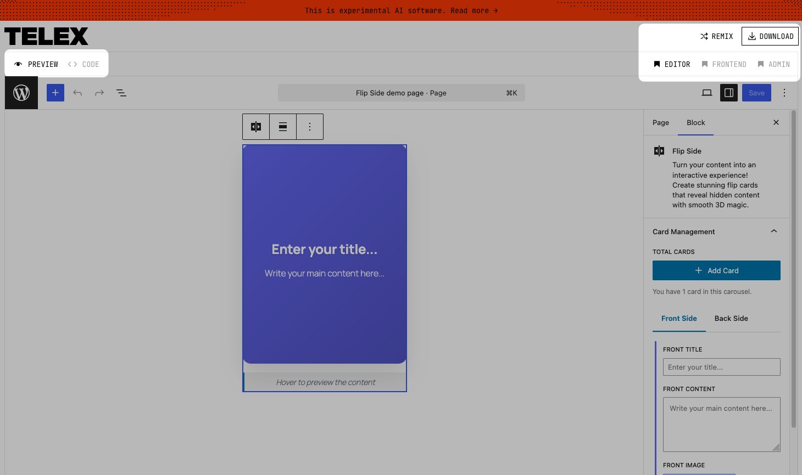
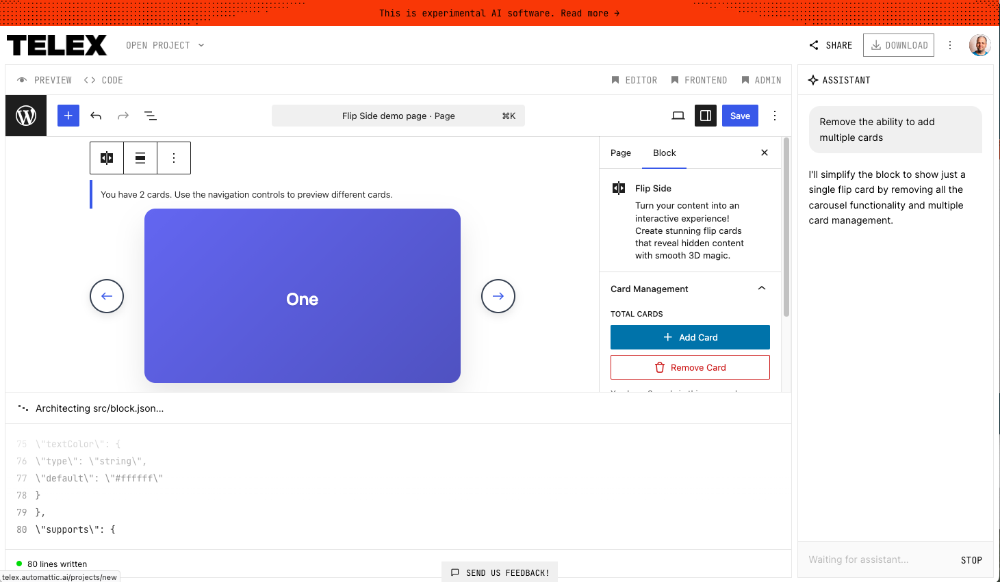

Building WordPress Blocks
with Telex
AI-Powered Block Creation + WordPress Playground

Alex Kirk
- Born and raised in Vienna, Austria
- At Automattic (runs WordPress.com & more) since 2014
- Engineer, leading teams around Localization, Playground, Data Liberation, and previously, Matrix
- Sponsored to contribute to WordPress.org in Meta and Polyglots
- Sideprojects in the decentralized web space
- Friends Plugin: Make your blog your own hub for subscribing to and interacting with others via RSS, ActivityPub, ...
- Enable Mastodon Apps: Use Ivory, Tusky, ... with your site
Agenda
- What is Telex?
- How does Telex work?
- The role of WordPress Playground
- Vibe Coding with AI & Playground
- Block examples & tools (Blocktober, My Telex Blocks)
- Playground in your workflow (AI tools, GitHub Actions)
- Live Demo
What is Telex?
- AI-powered WordPress block builder by Automattic
- https://telex.automattic.ai/
- The problem: Creating blocks requires JS/React knowledge
- The solution: Describe what you want → get a working block
- Test immediately in editor and frontend (uses Playground), refine, download, use on your site

How Telex Works
- Describe your block idea in plain language
- AI generates the block source code & builds it
- Instant preview by using WordPress Playground
- Refine with additional instructions
- Download as a plugin
- Install on your WordPress site
Telex UI
Telex Prompting UI
Inspiration for Blocks
- Telex Project Official Showcase
- You can remix or download them
- Blocktober by Tammie Lister: One block a day in October 2025
- Iconick Blocks: Nick Hamze's blocks created with Telex
- Each includes links to the Telex project
Combining Multiple Blocks
https://akirk.github.io/my-telex-blocks/
- Each Telex block is its own plugin
- Many blocks can take over your plugins page
- Tool to combine multiple Telex blocks into one plugin
- Drag & drop multiple plugin ZIPs
- Customize plugin name, description, and author
- One plugin instead of many
WordPress Playground
- Powers Telex: you can see your block right away
- WordPress runs entirely in your browser (using WASM)
- Boots WordPress according to a blueprint
- Ephemeral, but you can also persist playgrounds
- Perfect for: testing, demos, learning, experiments
- https://playground.wordpress.net/
Recent Playground Updates
- Now features a file browser/editor
- edit files, add folders via drag & drop
- Improvements in feature parity with WordPress
- SQLite, PHP extensions
- Updates to Playground CLI, replacing wp-now
- Find out more in the post
Things you might have missed about the Playground Project
Coding Anywhere with AI
- Web coding AI tools:
- Run on their own remote sandboxes
- Playground allows you to test WordPress code
without local environment- Allows fixing things on the go
- Quickly try something from the web
Developing without a computer
- Quickly try out ideas on mobile or tablet
- Fix small bugs on the go
- Test changes in Playground
- When ready, create a PR
- No need for a programming keyboard or local setup
Playground in Your Workflow
Example: CLAUDE.md in the Friends Plugin
- Instruct your AI to show Playground links for a branch (or PR)
- Playground URL with git reference (use Step Library to generate it)
https://playground.wordpress.net/#{"steps":[
{"step":"installPlugin",
"pluginData": {
"resource": "git:directory",
"url": "https://github.com/username/repo",
"ref": "BRANCH_NAME",
"refType": "branch"
},
"options": {
"activate": true
}]- "Replace BRANCH_NAME with the branch"
Playground Step Library
https://akirk.github.io/playground-step-library/
- Visual builder for creating Playground blueprints
- Library of "Custom Steps" that go beyond standard
- Drag & drop steps, configure with variables
- Helps create a well-crafted blueprints for your need
- Example: "Load Feeds into the Friends plugin" blueprint
- Generate shareable configurations for demos & testing
GitHub Actions & Automation
- Automatic Playground previews for pull requests
- GitHub Action: action-wp-playground-pr-preview
- "Try it in WordPress Playground" button for every PR
- Auto-update on new commits
- Private repository support (in development)
- PR #2856: GitHub OAuth for private repos
- Test private projects in Playground too
Getting Started & Tips
- telex.automattic.ai
- Very visual, no setup (except: WordPress.com account)
- Useful for augmenting your content
- My Telex Blocks when they become too many
- Embed Playground in your AI workflow for quick testing
- Refine your blueprint with a landing page, content, ...
- Plugin Preview on WordPress.org
Live Demos
Resources
- Telex - AI Block Builder
- WordPress Playground
- Step Library
- Make WordPress Playground - Project blog
- Blocktober.fun - Block examples
- My Telex Blocks - Combine blocks
- GitHub Action - Playground PR Previews